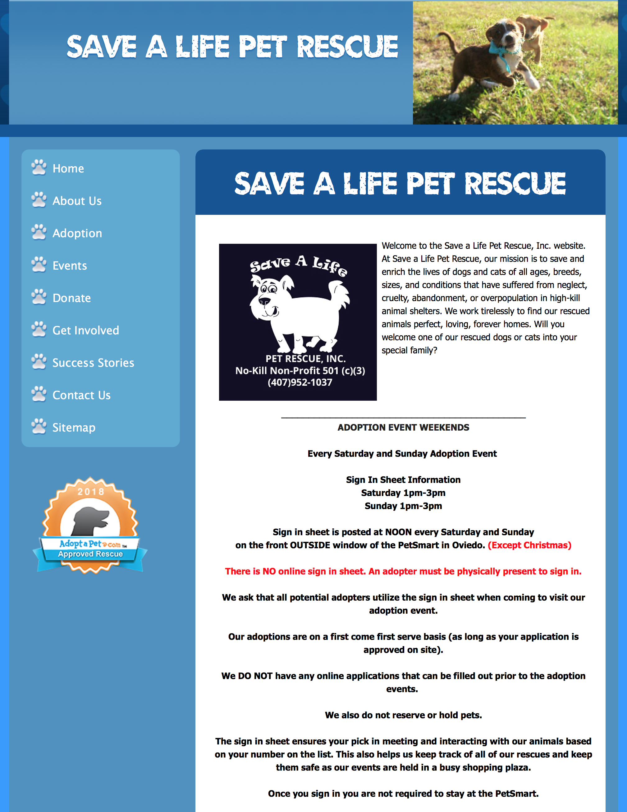
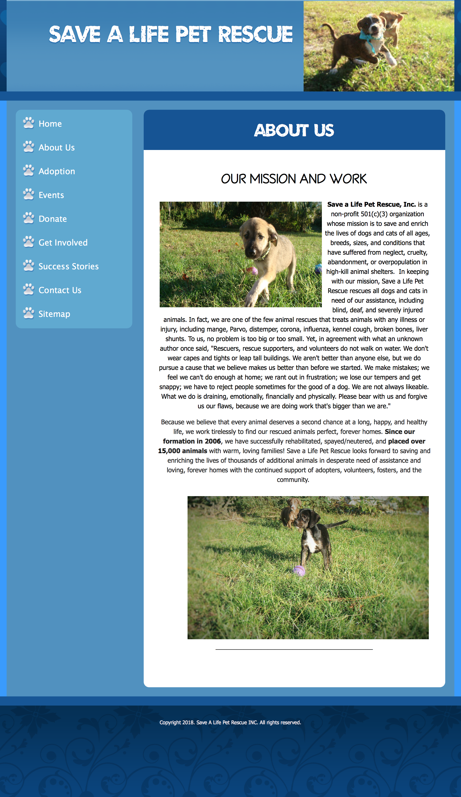
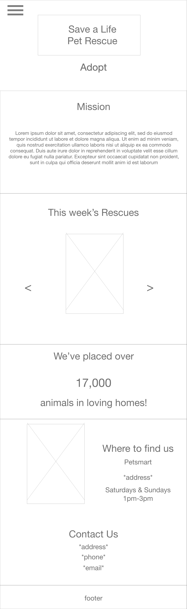
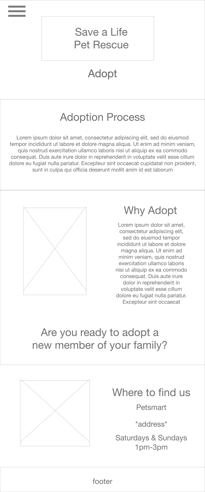
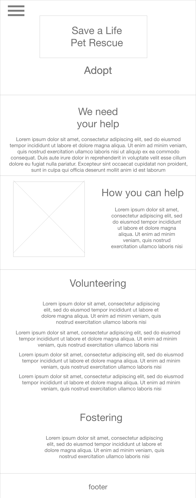
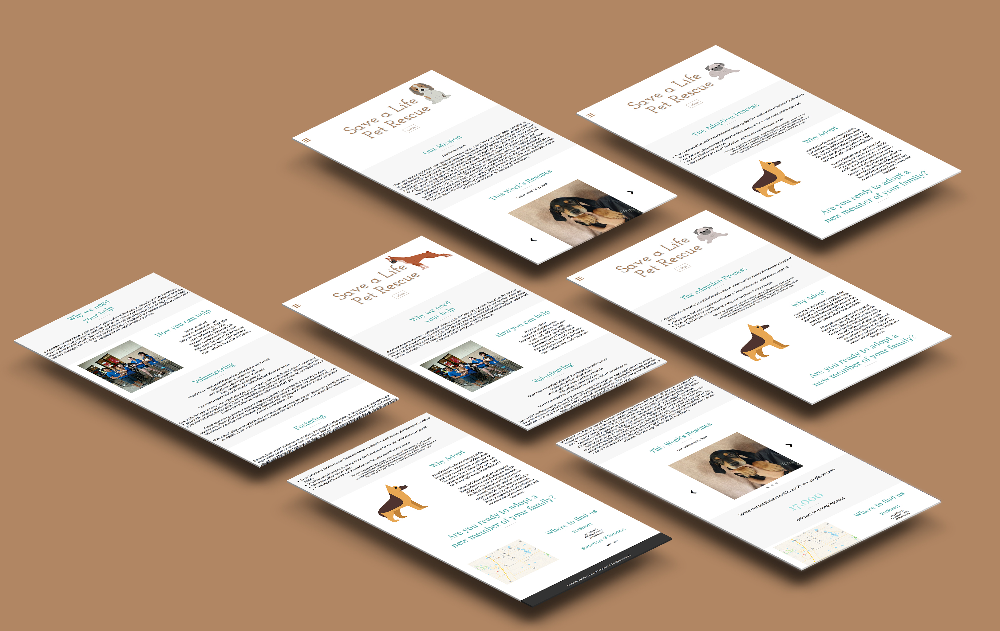
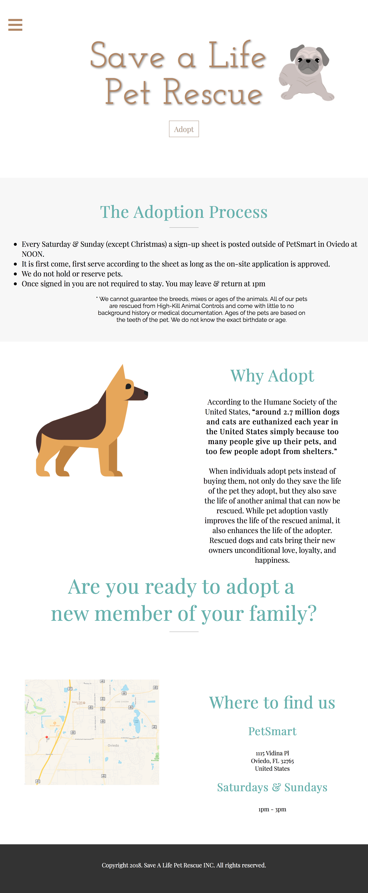
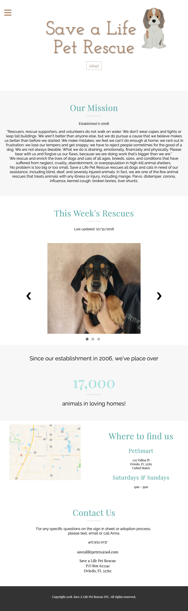
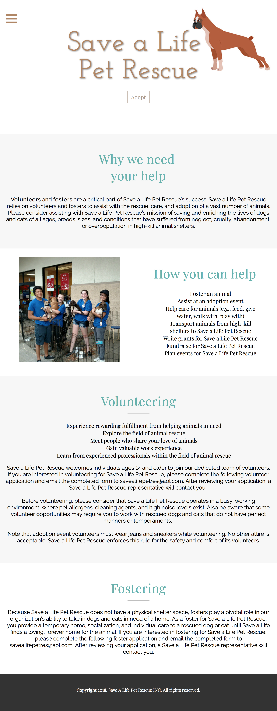

Save a Life Pet Rescue
Roles: Visual Design & Development
Site reconstruction for a non-profit pet rescue located in Oviedo, Florida with rescues from high-kill shelters scattered around the southern US.


The intial site lacked many key components that create a satisfactory user experience. It's color was a bit too radiant which distracted from the content. The fonts were below par to deliver a message with the perserverance and thoughtfulness that the organization represents. Content layout and order was defaulted to conjure an uninteresting sitemap.
Initial Wireframes



I understood their desire for a fun, cartoon vibe to appeal to families. I wanted to satisfy this coroporate identity while also modernizing the site's content and minimalizing information that was misplaced or unneeded through out the site.
I altered their color palette to a soothing tone of their existing colors. Mild browns and blues were used to reiterate their mission to rescue animals and uphold the familial appeal.




